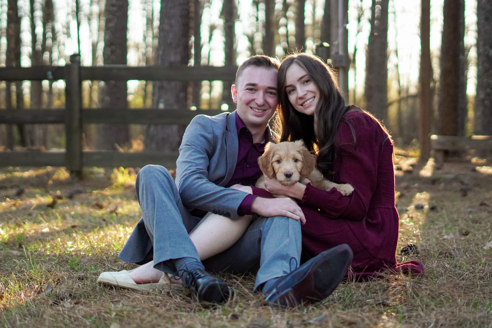
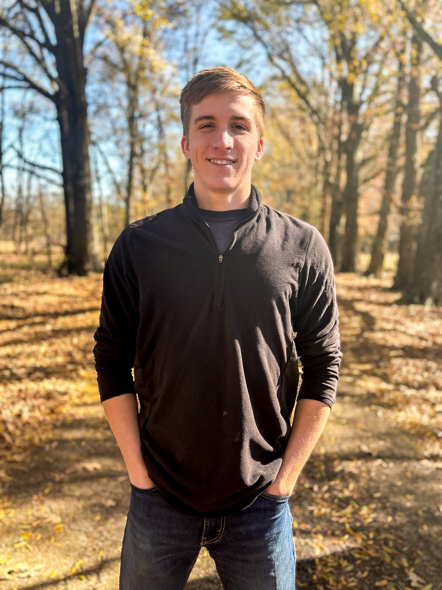
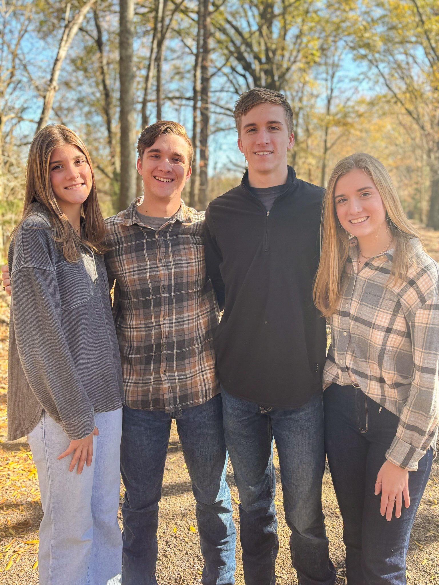
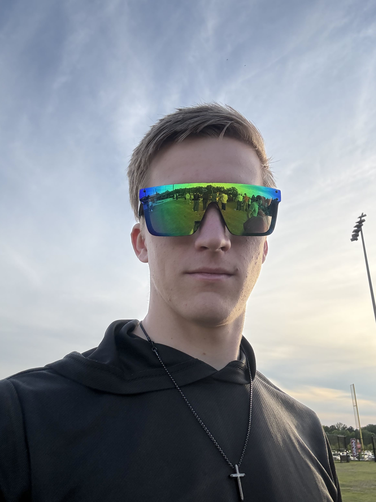
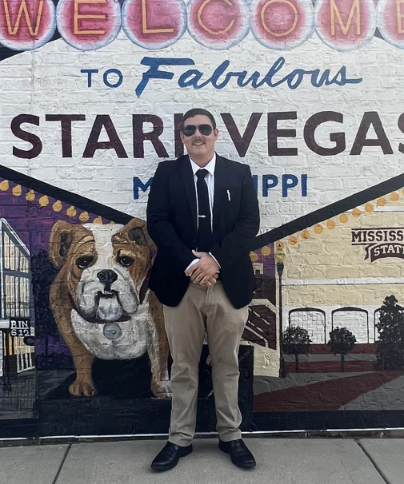
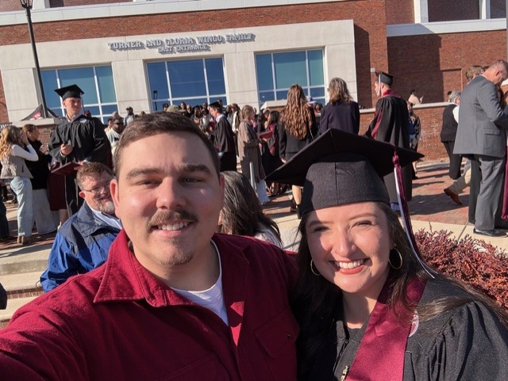
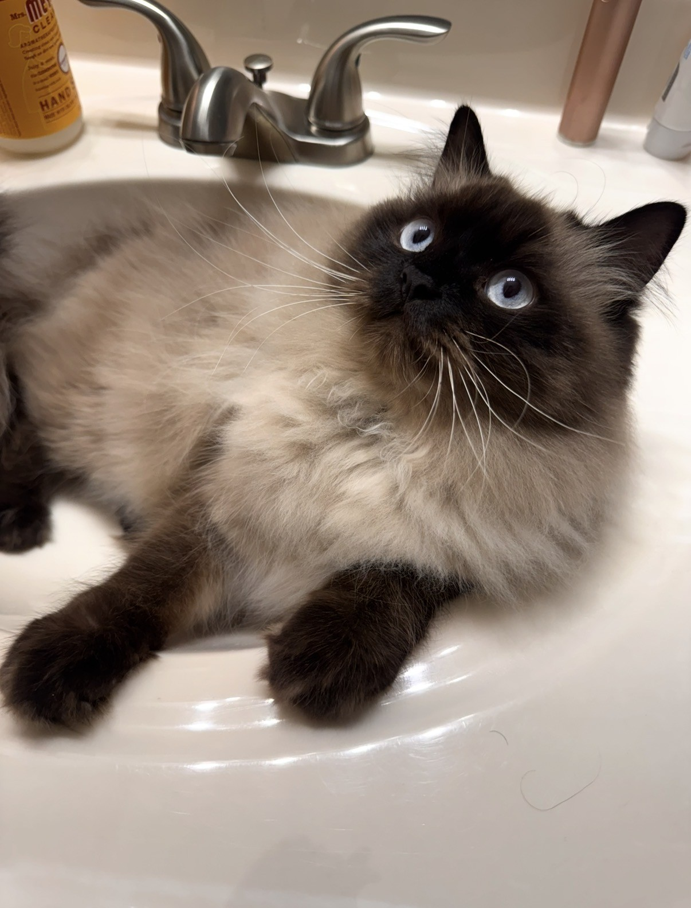
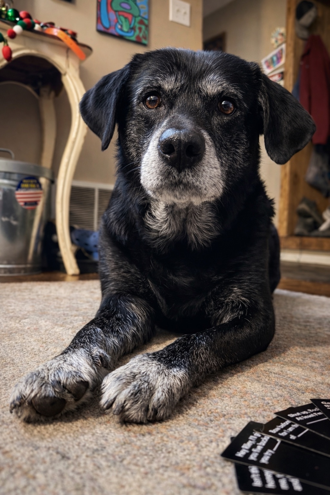

Meet the Team!
The R.E.P. Tracker was developed by The SparkPlugs, a team of Senior Computer Science and Electrical and Computer Engineering Students in attendance at Mississippi State University.
The team is made up of 7 members, each responsible for a different subsystem of the R.E.P. Tracker, and each member has been crucial to the success of the project.
Team Members:
Christian Pope - Project Manager and responsible for the Camera Analysis subsystem.

Christian is from Leaksville, Mississippi.
He is happily engaged to his fiancée Anna!
Between their wedding preparations and their puppy Noodle, they stay busy while crafting a life together.
He is a Senior Electrical Engineering Student specializing in Power Applications.

Christopher Ritz - the Team Lead and responsible for the Motion Tracking subsystem.

John David - touchscreen User Interface subsystem.

John David is from Starkville, Mississippi and has 10 siblings! He is the eldest of the Hardy siblings and cherishes his time with his family. He is a Senior Computer Engineering Student and his passion for fitness has helped drive the R.E.P. Tracker to even greater heights.

John David is passionate about God and strives to be the best Christian he can be!

Tyler Dunn - Power System

Tyler is from Hattiesburg, Mississippi and is a Senior Electrical Engineering Student specializing in Power Applications. Tyler is happily married to his wife Jessica, and they have one of the fluffiest creatures you'll ever meet, simply called "Fishstick".


Grayson Brinkley - User Feedback subsystem.
Grayson is a Senior Electrical Engineering Studen. He is from , Mississippi and is the youngest of 3 siblings. Grayson is passionate about fitness and has been a driving force behind the R.E.P. Tracker's User Feedback subsystem.

Joshua Lane - Performance Monitoring subsystem.
Jamie Anderson - Phone App, Database, and overall Bluetooth Communication subsystems.

Each member of the team has been crucial to the success of the project, everyone has put in countless hours of work to ensure that the R.E.P. Tracker is the best it can be!